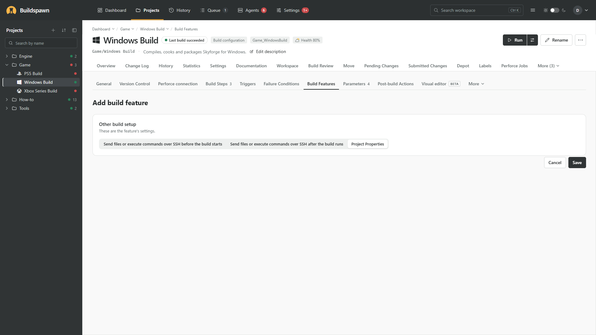

Project Properties
Gives the build configuration the properties set on the projects above it.
When to use it
Use it when a project holds a list of properties (name and value pairs, set in the project settings under List of project properties) and you want builds in it to see them as environment variables. Examples are the studio name, a server address or a share path.

How to set it up
- Open the build configuration, click Settings, then Build Features. Click Add build feature and choose Project Properties.
- There is nothing to fill in. Click Save.
Every field
| Field | What it does | Default | Example |
|---|---|---|---|
| (no fields) | The feature inherits every property defined in the project settings of the parent project, or of any project above it. | Off | - |
A worked example
The Game project lists the property DROP_SHARE with the value \\files\skyforge\drops. A build configuration with this feature can read %DROP_SHARE% in a step.
What you see when it runs
The properties are in the environment of every step. A build configuration in a project with no properties gets nothing extra.
Problems and fixes
| Problem | What to do |
|---|---|
| The variable is not there | Check the List of project properties on the project, and that this feature is on. |